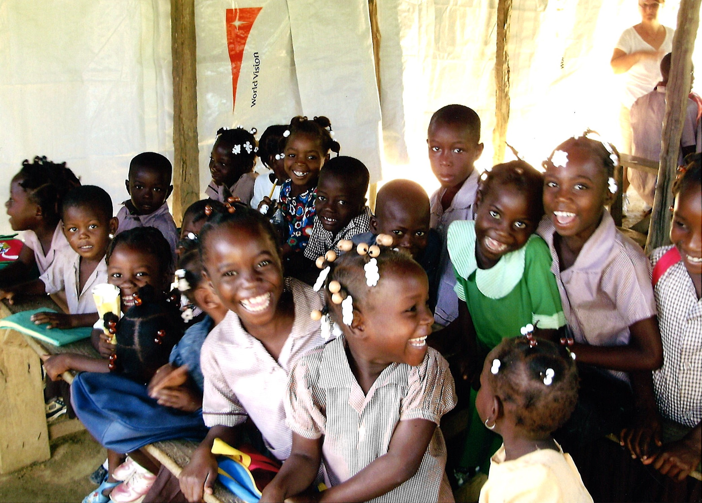
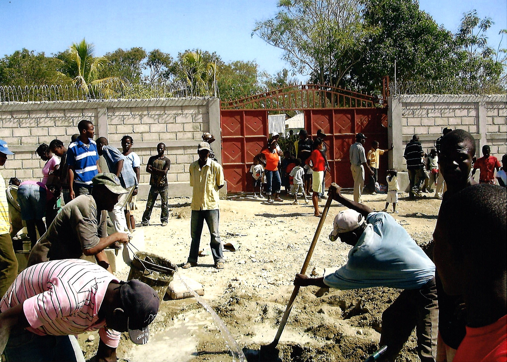
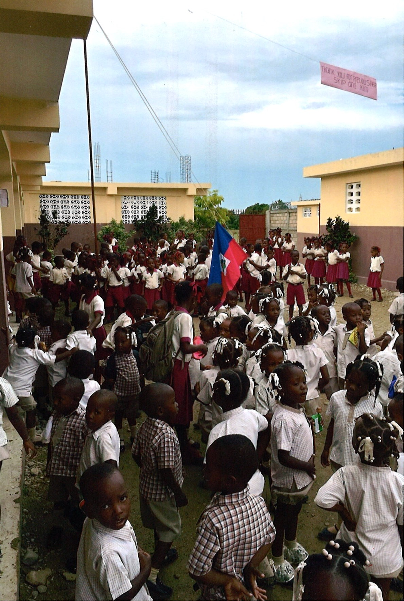

Thomassique, Haiti
Haiti has a shortage of schools, especially in small towns and rural areas
Over 50% of the population is illiterate
There is a lack of access to potable water and sewer systems

How OPTE Helps
OPTE is a non-profit corporation put together by Rotary Clubs, Church service groups, and individuals dedicated to the cause
Runs a physical school that provides education to local children
The school is free for all the children
Currently over 200 children attend the school
Provides all students with a meal everyday
Allows students access to safe drinking water and a proper sewer system
Allows the children to receive a safe elementary education and have a chance at further learning
Some students that attended the school have already
succeeded in passing the the test run by the Haitian government that would allow them access to higher education

OPTE Mission Statement
"Out of Poverty thru Education is a group of volunteers committed to build a school where the kids will
grow up with the love of God in their hearts,
nourishment in their bellies, and obedience in their characters. Let them have the knowledge
to change the fortunes of their future. "
Tax deductions are available
100% of donations go to helping the school